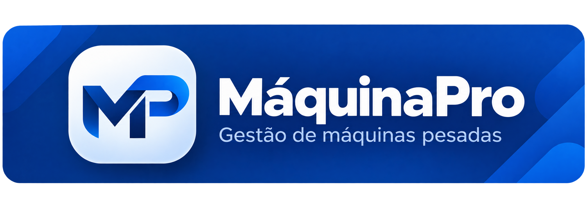

Gestão de máquinas
Controle organizado dos equipamentos e registros.

♙ Área do AdministradorLocação e gestão inteligente de máquinas para impulsionar seus projetos.
Somos dedicados à gestão e operação de máquinas e equipamentos, oferecendo soluções para controle de frota, organização operacional e acompanhamento da disponibilidade dos equipamentos.
Nosso objetivo é proporcionar mais organização, segurança e eficiência para cada operação.
Controle organizado dos equipamentos e registros.
Acompanhamento de quantidade e situação das máquinas.
Visualização rápida dos equipamentos disponíveis e em operação.
Informações centralizadas para apoiar decisões.
Consulte os equipamentos cadastrados e acompanhe o status de cada máquina.
Dados atualizados pelo administrador.
| Registro | Categoria de máquina | Quantidade | Status | Atualizado em |
|---|
Precisa de informações sobre máquinas, disponibilidade, alocação ou nossos serviços? Fale diretamente com nossa equipe pelo WhatsApp.
Falar pelo WhatsAppEstamos prontos para atender você e tirar suas dúvidas.
Resposta rápida pelo WhatsApp